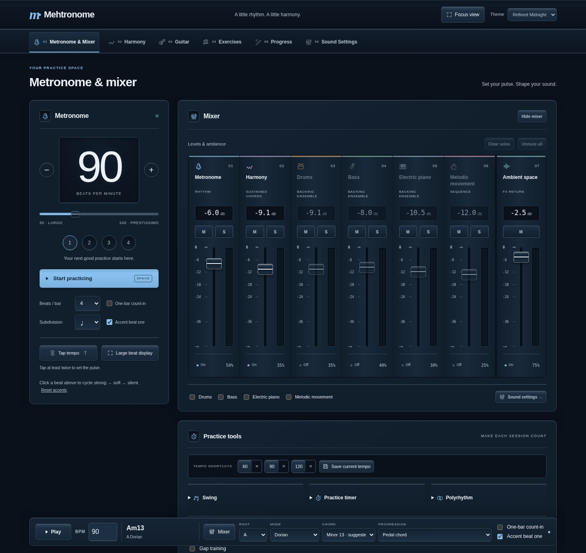

A shared visual language.
The mixer’s line icons, extended into navigation, module headings and useful actions. Compare the added icons with the studio styling preview across all four colour schemes.
Refined Midnight · Metronome & mixer
Workspace identities, module badges and clear action icons, using the same line style as the mixer.

One consistent family
Fine strokes, consistent proportions and theme accents tie the symbols to the mixer channel icons.
Icons with clear roles
Workspace identities, module headings and familiar actions get useful visual cues. Musical graphics stay uncluttered.
Labels stay visible
Words remain beside the icons. Decorative symbols are hidden from screen readers so accessible names stay clear.
Visual comparison of the proposed studio styling with and without the extra icons. The live app and saved choices are unchanged. These are reference captures; controls within the images do not play audio.